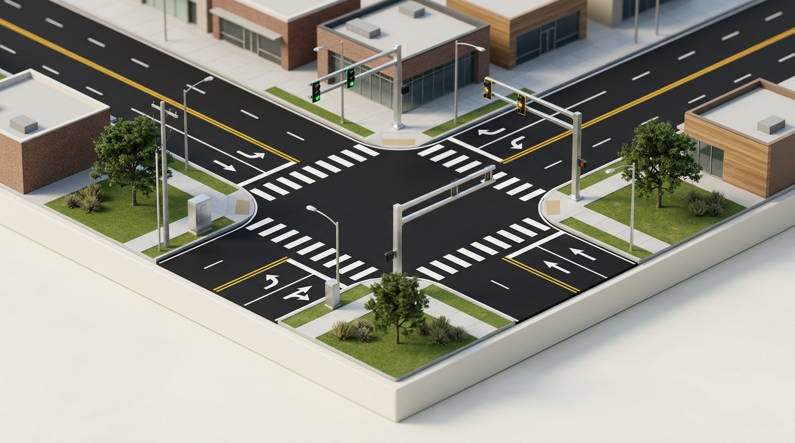

Distractions That Affect Driving
Operating a motor vehicle at 70 MPH means traversing 103 feet of roadway every single second. Cognitive, manual, and optical distractions hijack reaction thresholds and induce involuntary operational blindness under Texas jurisprudence.
"An operator commits an offense if the operator uses a portable wireless communication device to read, write, or send an electronic message while operating a motor vehicle unless the vehicle is stopped."
STATUTORY DOCTRINE: Texas imposes strict liability. Novice and minor operators under 18 years of age are completely prohibited from any wireless device usage (hands-free or handheld) under TTC § 545.425.

Distraction Avoidance Simulator
Driver distractions manifest across three intertwined physiological modalities: Visual (eyes off road), Manual (hands off wheel), and Cognitive (mind off driving). Interact with the 6 operational vectors below to reveal statutory liabilities, kinetic blind zones, and mandated defensive countermeasures.
Texting and handheld cellular operation demand continuous visual focus, manual finger repositioning, and deep executive cognitive retrieval simultaneously. Brain scans demonstrate a 37% decrease in parietal lobe spatial awareness while engaged with mobile devices, creating profound inattentional blindness where drivers fail to process brake lights directly within their central sightline.
Under Texas Transportation Code § 545.425, individuals under 18 years of age are statutorily prohibited from operating a wireless communication device entirely—including all hands-free attachments, Bluetooth earpieces, and speakerphones.
- • The Glovebox Anchor: Stow cellular devices in a secured console, glovebox, or purse before turning the ignition key. Out of reach eliminates unconscious checking habits.
- • Pre-Trip Autonomous Setup: Set navigation route, emergency contacts, and audio playlists while parked in legal parking stalls. Never modify while vehicle in gear.
- • TxDOT Pull-Off Mandate: If an urgent message or call requires response, exit the roadway entirely into an authorized parking apron or Texas Safety Rest Area.
Blind Travel Distance Calculator: The 5-Second Inattention Trap
Sending or reading an average text takes your eyes off the highway for 4.6 to 5 seconds. Adjust the highway speed slider below to observe how far your vehicle travels completely unguided while looking down at a screen.
Feet traveled each second
Traversed with zero optical contact
Endzone-to-endzone (300 ft)
The Three Modalities of Driver Inattention
Visual Inattention
Taking eyes completely off the forward roadway horizon. Causes driver to miss sudden deceleration waves, pedestrian intrusions, lane narrowing, and amber signal light cycles.
Manual Inattention
Removing one or both hands from the steering wheel. Reaching for a dropped bottle, eating food, or adjusting cabin climate prevents execution of high-speed evasive steering maneuvers.
Cognitive Inattention
Shifting mental processing power away from road navigation. Even with eyes aimed straight forward, an intense phone call or heated argument reduces optic brain comprehension by over 30%.
Knowledge Verification Check
Under Texas law, which statement accurately reflects the statutory wireless device restrictions for a driver under 18 years of age?
At a standard Texas highway speed of 70 MPH, approximately how far does a passenger vehicle travel during a typical 5-second glance at a smartphone or in-cabin telematics screen?
What is the legally sound and defensively responsible protocol when transporting unrestrained pets or passengers engaged in heated emotional conflict?